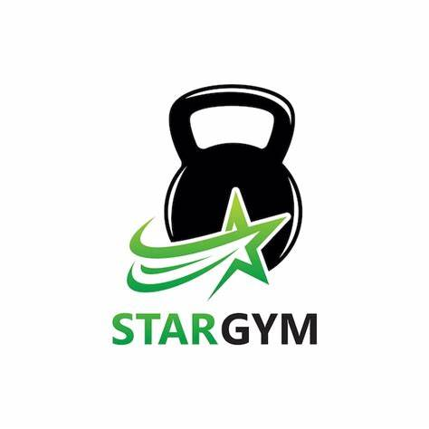
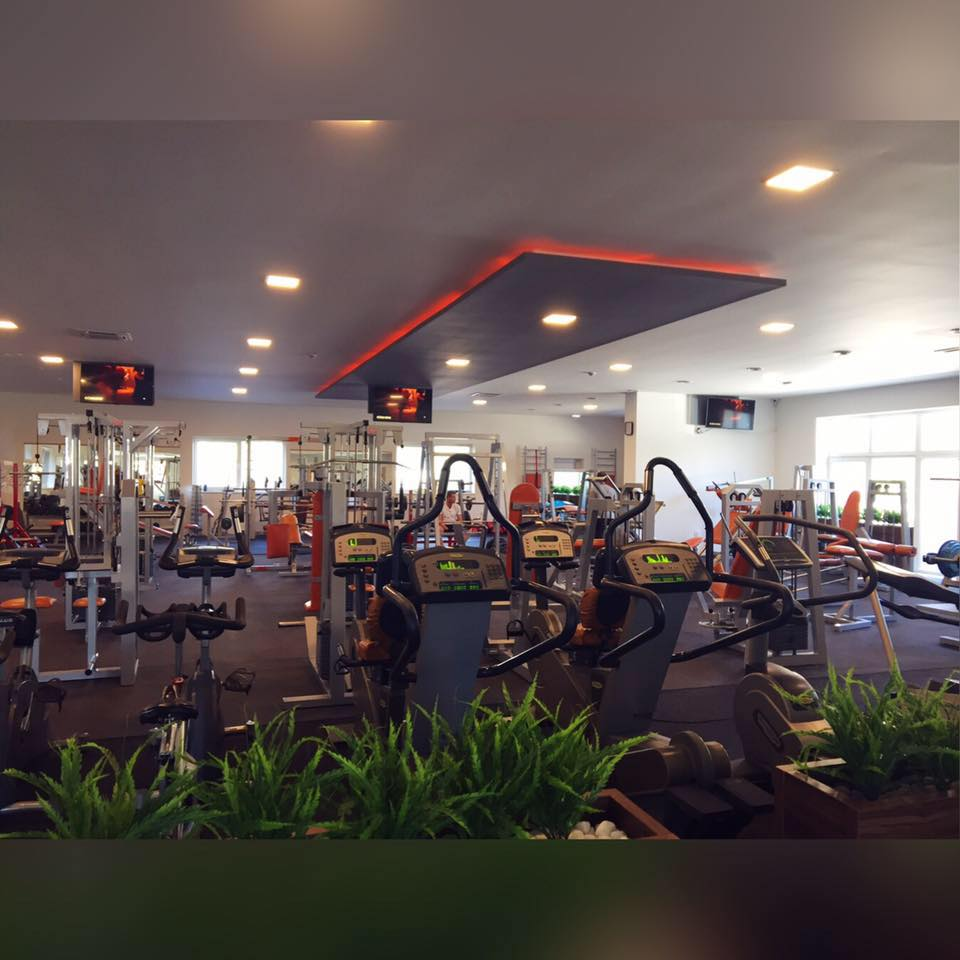
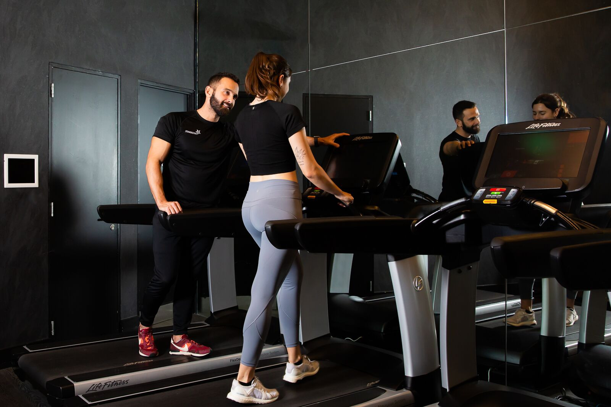

💪rutinas
💵credito
📞contactos
Bienvenidos al mejor Star Gym
Los Orígenes Star Gym comenzó como una pequeña idea de un joven entrenador llamado Miguel, quien desde pequeño soñaba con tener un espacio donde las personas pudieran no solo ponerse en forma, sino también crecer como individuos, mejorar su autoestima y superar sus límites. Tras años de trabajo como entrenador personal en diferentes gimnasios de la ciudad, Miguel decidió crear algo único: un gimnasio con un enfoque integral, que no solo se centrara en el entrenamiento físico, sino también en el bienestar mental de sus miembros.  Al principio, Star Gym era un pequeño local de 100 metros cuadrados, pero la idea innovadora de combinar entrenamiento físico de alta intensidad con prácticas como la meditación, la nutrición personalizada y el desarrollo personal, rápidamente atrajo la atención de muchas personas. El Crecimiento En sus primeros años, Star Gym luchó por destacarse en una ciudad llena de gimnasios tradicionales. Sin embargo, Miguel y su equipo de entrenadores no tardaron en poner en marcha programas únicos como "Entrena como una estrella", donde se integraban clases de fuerza, movilidad, y acondicionamiento físico junto con sesiones de motivación y coaching personal. Los resultados fueron sorprendentes, y rápidamente el gimnasio ganó popularidad. La clave de su éxito fue crear una comunidad. Los miembros no solo venían a entrenar; venían a un lugar donde se sentían parte de algo más grande. Las interacciones sociales, los desafíos mensuales y las historias de transformación personal fueron compartidas entre los miembros, lo que hizo que todos se sintieran más conectados y motivados.La Filosofía  El lema de Star Gym siempre fue "Más allá de los límites". Miguel y su equipo creían que el verdadero progreso no solo estaba en el físico, sino en el esfuerzo mental y emocional de cada persona. Esto se reflejaba en la variedad de clases que ofrecían: desde entrenamientos de alta intensidad, hasta clases de yoga, meditación y resiliencia emocional. Además, tenían un enfoque muy personalizado en cuanto a la nutrición, ya que entendían que cada cuerpo es único y requiere cuidados especiales. A lo largo de los años, Star Gym también adoptó tecnología innovadora. Instaló monitores de frecuencia cardíaca, sensores de rendimiento en sus equipos y un sistema de seguimiento digital donde los miembros podían ver su progreso. Esto no solo ayudaba a los entrenadores a personalizar aún más los planes de entrenamiento, sino que también motivaba a los miembros a continuar mejorando. Los Retos Con el éxito también llegaron los retos. El aumento de miembros trajo consigo la necesidad de expandir las instalaciones. Pronto, Star Gym se mudó a un nuevo local, tres veces más grande, con áreas especializadas para diferentes actividades, como un espacio para entrenamiento funcional, una zona de pesas, una sala de spinning, e incluso un área exclusiva para meditación y relajación. Sin embargo, el crecimiento también trajo desafíos logísticos y financieros. A pesar de la creciente demanda, Miguel tuvo que tomar decisiones difíciles sobre cómo equilibrar la calidad del servicio con los costos de expansión. Afortunadamente, su enfoque en mantener una atmósfera familiar y en valorar a cada miembro como único permitió que el espíritu original del gimnasio se mantuviera intacto. La Comunidad y el Impacto A lo largo de los años, Star Gym no solo se convirtió en un lugar para mejorar el físico, sino también un centro comunitario en el que se hacían eventos, competiciones internas y actividades sociales. Se organizaron torneos de levantamiento de pesas, carreras de resistencia y, sobre todo, se promovió la cultura del apoyo mutuo. El impacto que Star Gym tuvo en sus miembros fue profundo. Historias de personas que superaron enfermedades graves, que transformaron su estilo de vida o que alcanzaron metas impensables, eran frecuentes. Un miembro, por ejemplo, pasó de ser sedentario a completar un triatlón después de un año de entrenamiento intensivo, mientras que otra miembro, que luchaba con su salud mental, encontró en el gimnasio una forma de salir de su depresión gracias a las clases de meditación y al apoyo de la comunidad. La Evolución Hoy en día, Star Gym sigue creciendo. Miguel sigue liderando el gimnasio con su visión original, pero ahora cuenta con un equipo de entrenadores expertos en diferentes disciplinas, desde deportes de resistencia hasta coaching en nutrición mental y emocional. La innovación nunca se detiene, y Star Gym sigue explorando nuevas maneras de integrar la tecnología en el entrenamiento, como aplicaciones personalizadas que se conectan con los dispositivos de cada miembro, proporcionando informes detallados sobre su rendimiento. Además, Star Gym ha iniciado una campaña para enseñar a los jóvenes sobre la importancia del ejercicio y el autocuidado, especialmente en un mundo donde la tecnología y los dispositivos móviles pueden alejar a muchos de la actividad física. En Resumen Star Gym es mucho más que un gimnasio; es un lugar donde las personas encuentran su fuerza, superan sus límites y se convierten en versiones más fuertes y saludables de sí mismas, tanto física como mentalmente. La historia de Star Gym es una de pasión, innovación, y comunidad, demostrando que, con el enfoque adecuado, el trabajo en equipo y la dedicación, se puede transformar la vida de las personas, una sesión de entrenamiento a la vez.